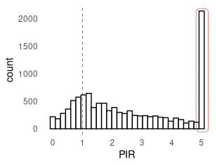
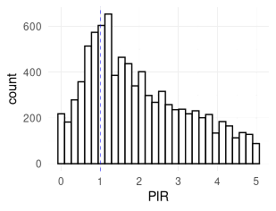
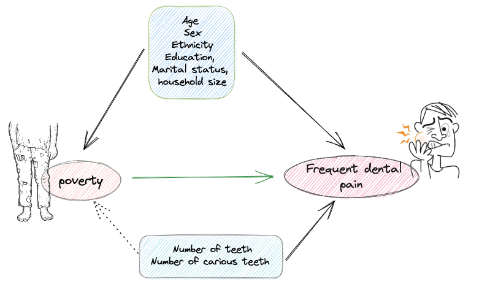
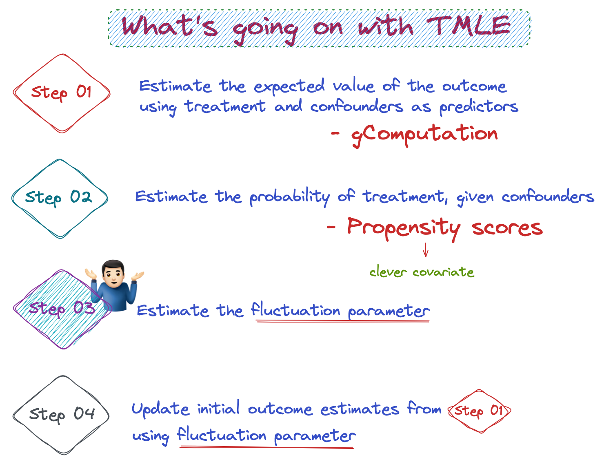
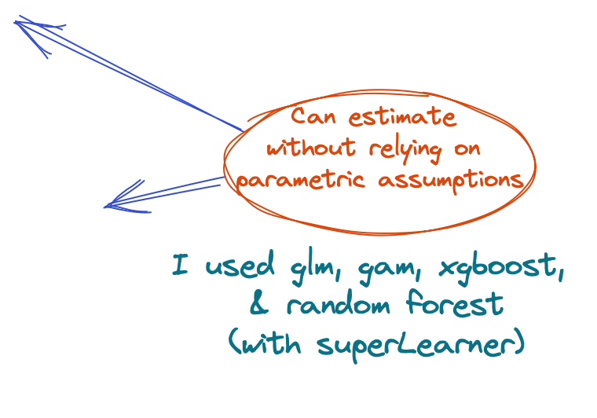

Impact of Poverty on
Frequent Dental Pain
Among US Adults
Using Modified Treatment Policy Approach
Upul Cooray \(^🎙️\) \(^1\), Kenji Takeuchi\(^1\), Ken Osaka\(^1\) and Jun Aida\(^2\)
\(^1\)Graduate school of dentistry, Tohoku University, Japan.
\(^2\)Tokyo Medical and Dental University, Japan.
🎙️ 🇱🇰 Upul Cooray
Background
Image from https://wordwenches.typepad.com/
The association between economic disadvantage and adverse oral health outcomes is well known
The relationship between income and oral health: a critical review A Singh, MA Peres, RG Watt - Journal of dental research, 2019
However, evidence for this association based on causal inference is limited
We aimed to obtain a causal estimate of the impact of poverty on the prevalence of frequent dental pain among the US adults.
Methods
Data & participants
Data from 2013-2014, 2015-2016, and 2017-2018 cycles of the National Health and Nutrition Examination Survey(NHANES)
Dentate (edentulous individuals were excluded)
Age 21 to 70
N= 8840
Missing data were imputed using random forest multiple imputation generating 10 datasets
Methods
Study variables
💵 Poverty Income Ratio (PIR)
Family income/poverty thresholdContinuous variable (Range 0-5)
PIR < 1 : In poverty
median PIR : Threshold for the relative poverty
People with > 5 PIR are lumped together in the data


😧 Frequent dental pain
Categories: Very often/ Fairly often/ Occasionally/ Hardly ever/ Never
Dichotomised : [Very often/ Fairly often] = 1
Age, Sex, Education, Ethnicity
Marital status, household size
Number of teeth, Number of carious teeth

Methods
Statistical analysis- main steps
Step 1: Defined the causal effect using MTP framework by shifting the observed exposure to different hypothetical scenarios
Step 2: Estimate the population level expected outcome under different scenarios specified in the previous step
Targeted minimum loss-based estimation (TMLE) in combination data adaptive regressions (machine learning algorithms) were used to estimate outcomes.
Step 3: Contrast the outcome estimates of hypothetical interventions against the outcome estimate under observed exposure level to calculate odds ratios.
Methods
Step 1- Shifting the observed exposure
🌎 Hypothetical scenarios to improve the PIR among the participants who are below absolute poverty line
Scenario 1: What if we improve PIR by 25% (upper bounded by PIR==1)
| Observed PIR | 2.43 | 0.33 | 0.78 | 3.36 | 2.96 | 1.38 | 2.18 | 2.14 | 3.27 | 2.61 | 0.33 | 0.15 | 0.47 | 0.36 | 0.77 | … N |
| Improve 25% | 2.43 | 0.41 | 0.98 | 3.36 | 2.96 | 1.38 | 2.18 | 2.14 | 3.27 | 2.61 | 0.41 | 0.19 | 0.59 | 0.45 | 0.96 | … N |
Scenario 2: What if we improve PIR by 50% (upper bounded by PIR==1)
Scenario 3: What if we improve PIR by 75% (upper bounded by PIR==1)
Scenario 4: What if we doubled the PIR (upper bounded by PIR==1)
| Observed PIR | 2.43 | 0.33 | 0.78 | 3.36 | 2.96 | 1.38 | 2.18 | 2.14 | 3.27 | 2.61 | 0.33 | 0.15 | 0.47 | 0.36 | 0.77 | … N |
| Improve x2 | 2.43 | 0.66 | 1.00 | 3.36 | 2.96 | 1.38 | 2.18 | 2.14 | 3.27 | 2.61 | 0.66 | 0.30 | 0.94 | 0.72 | 1.00 | … N |
🌎 Hypothetical scenarios to improve the PIR among the participants who are below relative poverty line (below median PIR)
Scenario 5: What if we improve PIR by 25% (upper bounded by PIR==median)
| Observed PIR | 2.43 | 0.33 | 0.78 | 3.36 | 2.96 | 1.38 | 2.18 | 2.14 | 3.27 | 2.61 | 0.33 | 0.15 | 0.47 | 0.36 | 0.77 | … N |
| Improve 25% | 2.43 | 0.41 | 0.98 | 3.36 | 2.96 | 1.70 | 2.18 | 2.14 | 3.27 | 2.61 | 0.41 | 0.19 | 0.59 | 0.45 | 0.96 | … N |
Scenario 6: What if we improve PIR by 50% (upper bounded by PIR==median)
Scenario 7: What if we improve PIR by 75% (upper bounded by PIR==median)
Scenario 8: What if we doubled the PIR (upper bounded by PIR==median)
| observed PIR | 2.43 | 0.33 | 0.78 | 3.36 | 2.96 | 1.38 | 2.18 | 2.14 | 3.27 | 2.61 | 0.33 | 0.15 | 0.47 | 0.36 | 0.77 | … N |
| improve x2 | 2.43 | 0.66 | 1.56 | 3.36 | 2.96 | 1.70 | 2.18 | 2.14 | 3.27 | 2.61 | 0.66 | 0.30 | 0.94 | 0.72 | 1.54 | … N |
Methods
Step 2- Estimating outcome under shifted exposures


Methods
Step 3- Contrast outcome estimates to obtain the causal estimand
Population level estimates for intervention among PIR<1
Observed vs 25% improvement
Observed vs 50% improvement
Observed vs 75% improvement
Observed vs x2 (100%) improvement
Population level estimates for intervention among PIR<Median
Observed vs 25% improvement
Observed vs 50% improvement
Observed vs 75% improvement
Observed vs x2 (100%) improvement
Results
Contrasting outcome estimates
| Contrast | OR [95% CI] | P value |
|---|---|---|
| Intervention on absolute | ||
| Observed vs S1 | 1.02 [0.92-1.12] | 0.641 |
| Observed vs S2 | 1.08 [0.91-1.26] | 0.376 |
| Observed vs S3 | 1.11 [0.90-1.31] | 0.324 |
| Observed vs S4 | 1.08 [0.89-1.27] | 0.442 |
| Intervention in relative poverty | ||
| Observed vs S5 | 0.82 [0.76-0.88] | 0.000 |
| Observed vs S6 | 0.74 [0.62-0.86] | 0.001 |
| Observed vs S7 | 0.65 [0.50-0.79] | 0.000 |
| Observedv s S8 | 0.57 [0.38-0.75] | 0.000 |
✔️ Adjusted for covariates
✔️ Appropriately weighted for NHANES svy design
✔️ 10 imputed sets combined using Rubin’s rules
✔️ TMLE estimates were cross validated (x10 folds)
Results
Why the interventions only among absolute poor did not work?
Conclusions
🎯 Poverty act as a high level cause of frequent dental pain among US adults
🎯 Interventions to reduce relative poverty might reduce the burden of frequent dental pain at population level
Thank you!!!
All the codes and data available at: https://github.com/upulcooray/dental_pain_income_index
2022 IADR/APR General Session